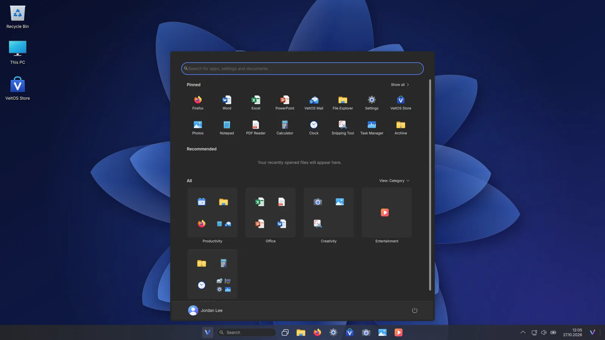
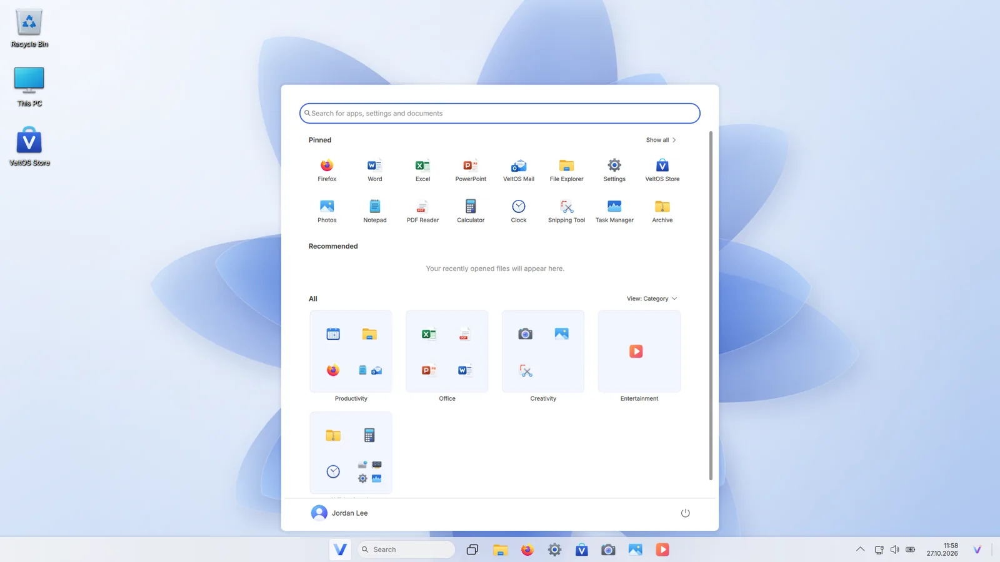
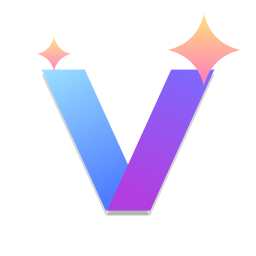
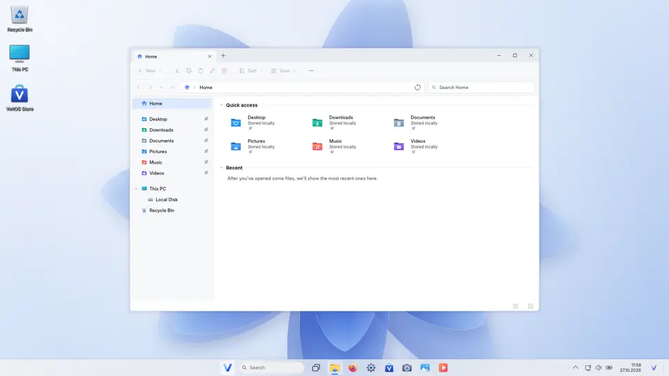
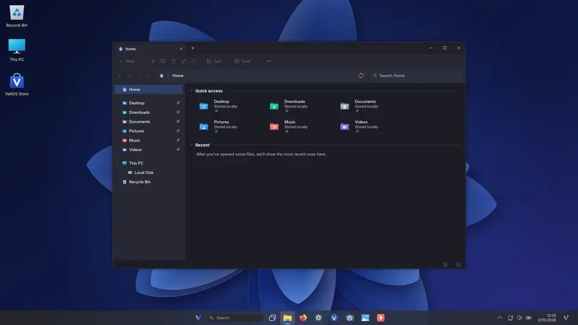
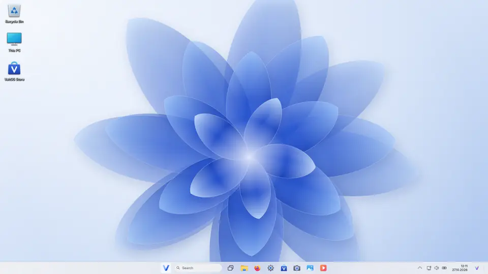
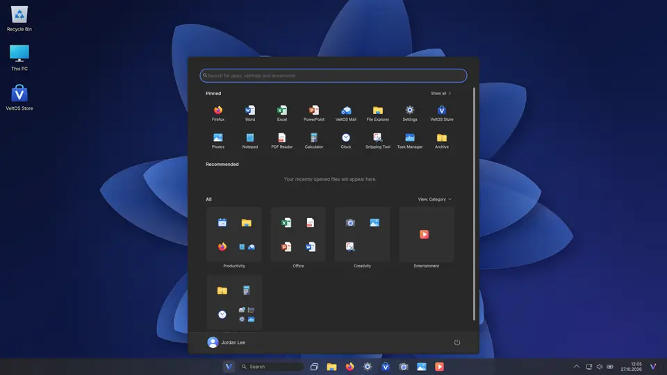

A desktop you already know
A centred taskbar, Start with pinned apps, search as you type, Task View with virtual desktops, the notification centre and the right-click menus you know.
Version 1.0 · Free · Open source · Debian 13
VeltOS is a free operating system that works the way Windows 11 users already know: Start, the taskbar, File Explorer, Settings and a Store are right where you expect them. It brings more than twenty apps of its own, the VeltOS AI assistant, Office, a modern installer and Windows program support.



* Measured with systemd-analyze on an installed VeltOS 1.0 (4 CPU cores, 8 GB of memory): the kernel and the system until the sign-in screen, without the PC's firmware. Your hardware will differ.
Features
No learning curve: VeltOS keeps the places, names and shortcuts you know from Windows 11, on a fast, secure open-source base.
A centred taskbar, Start with pinned apps, search as you type, Task View with virtual desktops, the notification centre and the right-click menus you know.
Tabs, Home, This PC and the Recycle Bin. USB sticks and Windows drives open as they are; copy, compress and format from the right-click menu.
Wi-Fi, Bluetooth, displays you drag into place, sound, accounts, themes and accent colours, all on Windows 11's familiar pages.
Wi-Fi, Bluetooth, mobile hotspot, night light, power modes, volume and brightness in one flyout. Windows + P projects to a second screen.
Thousands of free apps and games from Debian's signed archive, installed with one click. Updates come from the same place.
Word, Excel and PowerPoint documents open in VeltOS Office and are saved in Microsoft's formats by default, with templates to start from.
Double-click an .exe or .msi file and VeltOS installs it through Wine and adds it to Start. Not every program runs; VeltOS tells you.
Graphics Cards shows your GPUs and installs NVIDIA's driver, or AMD and Intel firmware, from Debian's archive with one button.
If VeltOS cannot start twice in a row, Automatic Repair opens with Startup Repair, Safe mode and Command Prompt. F1 shows the boot menu, F6 opens Recovery.
Software only from signed archives, AppArmor, Secure Boot, disk encryption that asks for your password at start-up, and an administrator prompt like User Account Control.
Few background services, compressed memory like Windows 11, and about four seconds of start-up until the sign-in screen.
Setup in Windows 11's style: next to Windows or in its place, with optional encryption, in a few minutes, in your language.
VeltOS AI
Press Windows + C and VeltOS AI opens beside your work, like Copilot. Ask a question, have it write an e-mail, or let it change a setting for you: it always asks before it does.
Personalize
Switch between light and dark in Settings or just ask VeltOS AI. Every app follows, together with eight themes, wallpapers and the accent colour you choose.
Apps
Each in the layout of its Windows 11 counterpart, in English and Turkish, in light and dark. Firefox, LibreOffice and thousands more come from the Store.


Screenshots
Every picture was taken on VeltOS 1.0. Switch this page between light and dark to see both looks; select a picture to see it larger.
No boot menu, no text: VeltOS' start screen, the sign-in screen and your desktop. F1 shows the boot menu, F6 opens Recovery.
Start, search, Task View and VeltOS AI, recorded on VeltOS.


Windows programs
Open an .exe or .msi file in File Explorer: VeltOS prepares Wine, installs the program and adds it to Start, in a window like Windows' App Installer.
Installer
VeltOS' installer looks like Windows 11's setup and explains every step. Install next to Windows, in its place or on a free partition, and encrypt the disk if you want.
Under the hood
| Version | 1.0 (27 October 2026) |
|---|---|
| Base | Debian 13 “trixie” |
| Kernel | Linux 6.12 LTS, signed for Secure Boot |
| Desktop | KDE Plasma 6.3 on Wayland, with VeltOS' taskbar, Start and window frames |
| VeltOS apps | Python 3.13, Qt 6.8 (PySide6) |
| Office, web | LibreOffice 25.2, Firefox ESR |
| Windows programs | Wine 10.0, DXVK, Wine Mono, Wine Gecko |
| Start-up | UEFI and BIOS, Secure Boot, GRUB 2.12, Automatic Repair |
| Languages | English and Turkish in VeltOS' apps; many more in the system |
| ISO | 2.1 GB, one hybrid image for USB sticks and DVDs |
| Licence | GPL-3.0-or-later (artwork CC BY-SA 4.0) |
Download
One ISO for 64-bit PCs both starts a live system and installs VeltOS. Try it live first, then install it next to Windows or in its place.
3e5273a13b0f87a11bd6a3fb668674b02c5865264065dfe5e570387f4ac1a2af
Check it after downloading. Linux, with the .sha256 file beside the ISO: sha256sum -c VeltOS-1.0-amd64.iso.sha256 says OK. Windows PowerShell: Get-FileHash VeltOS-1.0-amd64.iso shows the same value as above, in capital letters.
One file for every 64-bit PC, about 2.1 GB.
Use Rufus or balenaEtcher on Windows (balenaEtcher also on macOS and Linux). A stick of 4 GB or more is enough.
Choose the USB stick in your PC's boot menu (often F12, F11 or Esc). VeltOS starts as a live system, so you can look around first.
Select “Install VeltOS” and follow the steps. Back up your files first, as with any new system.
Tested with UEFI, BIOS and Secure Boot, and installed on a laptop with NVIDIA graphics.
FAQ
Yes. VeltOS is free and open source (GPL-3.0-or-later); its parts come from Debian and other open-source projects. There are no ads and no accounts.
No. VeltOS is a Linux distribution based on Debian 13 with KDE Plasma. It looks and works like Windows 11 but contains no Microsoft code and is not affiliated with Microsoft.
Many do through Wine, which VeltOS sets up with a double-click. Not every program works, games with anti-cheat and programs that need their own drivers especially, and Wine is not a security sandbox.
Yes. The installer can put VeltOS next to Windows. When the PC starts, press F1 to choose between them; otherwise VeltOS starts.
VeltOS 1.0 is the first public release. As with any new system, back up your files before you install it, and report anything that does not work on GitHub.
Security and app updates come from Debian's signed archive; VeltOS Store shows and installs them.
With an online service, your messages go to the service you chose, with your own key. The free local model runs entirely on your PC, and nothing you write leaves it.
VeltOS' own apps speak English and Turkish; the installer and the rest of the system offer many more languages.